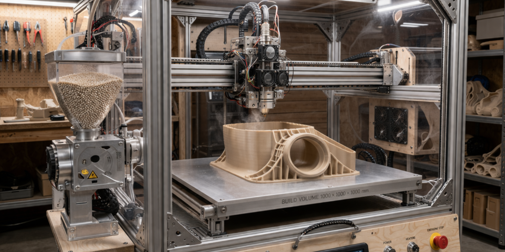
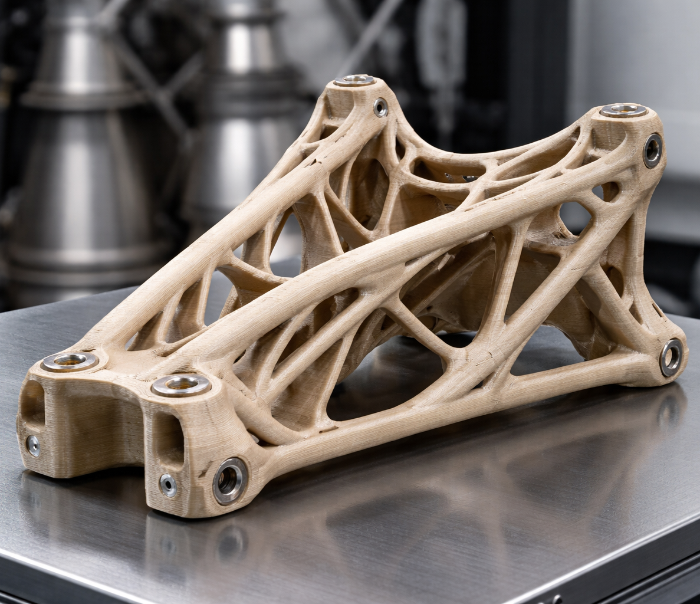
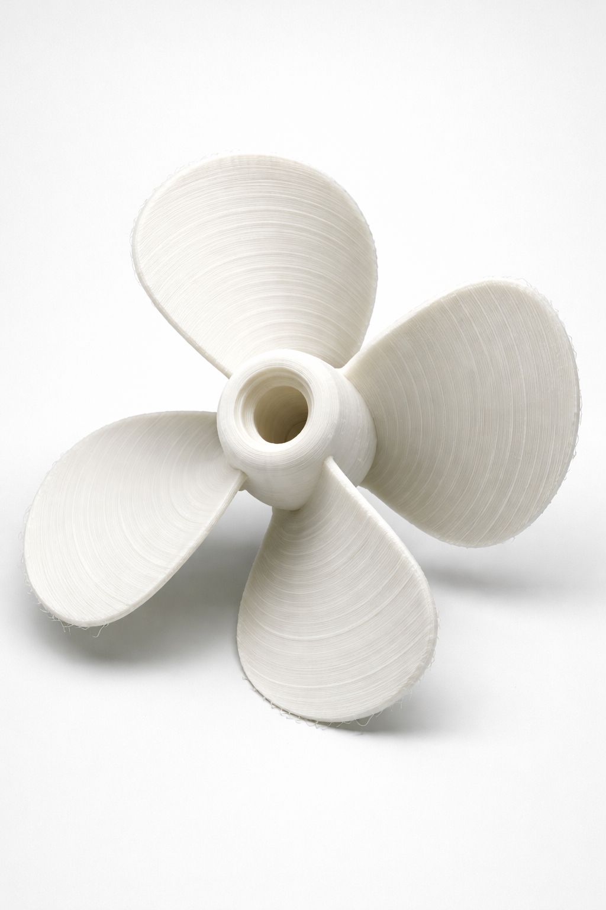
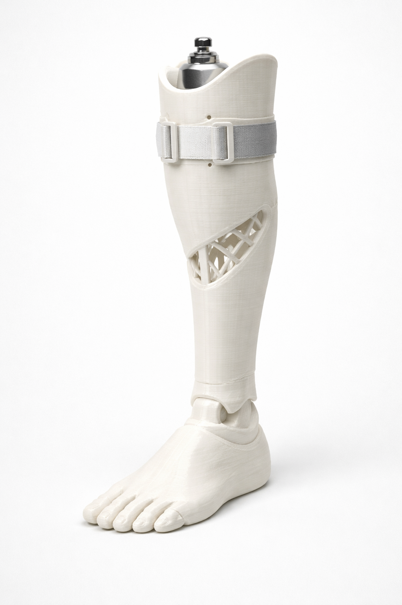

LFAM / Storformat 3D-print
Høyytelsespolymerer for de tøffeste forhold
Hvorfor 3D-printe hos oss
- Vi produserer store deler uten segmentering.
- Redusert produksjonstid
- Maskinering for presisjon
- Stabile deler som tåler de tøffeste forhold
Hvorfor høyytelsespolymerer?
- Høy styrke og kjemikalieresistens
- Høy driftstemperatur uten tap av styrke
- Tøff nok til å erstatte metaller
- Det rette valget når vekt er kritisk
Typiske leveranser

Space
Der vekt, styrke, temperatur og pålitelighet er ekstremt kritiske.

Maritim
Der korrosjonsbestandighet, kjemikaliebestandighet og lead time er de største risikofaktorene for nedetid.

Helse
Der vekt, utmatting og formbarhet kan hjelpe pasienter til en enklere morgendag.
Har du en del som “egentlig burde vært metall”, men der varme/kjemi/vekt taler for polymer? Send oss krav – vi foreslår løsning.
FAQ
Vanlige spørsmål
Hvilke filer trenger dere for å gi tilbud?
Helst STEP/IGES, gjerne også tegninger (PDF) om du har kritiske mål. Legg ved krav til temperatur, last, kjemi/miljø,
toleranser og ønsket etterarbeid (maskinering/montering).
Når bør jeg velge post-maskinering?
Når du har funksjonsflater, presise hull, planhet, tetningsflater eller andre toleransekrav.
Vi kombinerer LFAM og CNC slik at du får “best of both”.
Kan dere hjelpe med materialvalg?
Ja. Vi foreslår polymer basert på temperatur, kjemikalier, mekanisk last, kryp/utmatting og krav til dimensjonsstabilitet.
Hva slags plast kan dere printe i?
Vi kan printe i alle typer plast, kan du smelte det kan vi printe det.
Kan dere levere deler “ferdig”?
Ja – vi kan levere printede deler med nødvendig etterarbeid, maskinering, og (der det er relevant) dokumentasjon.